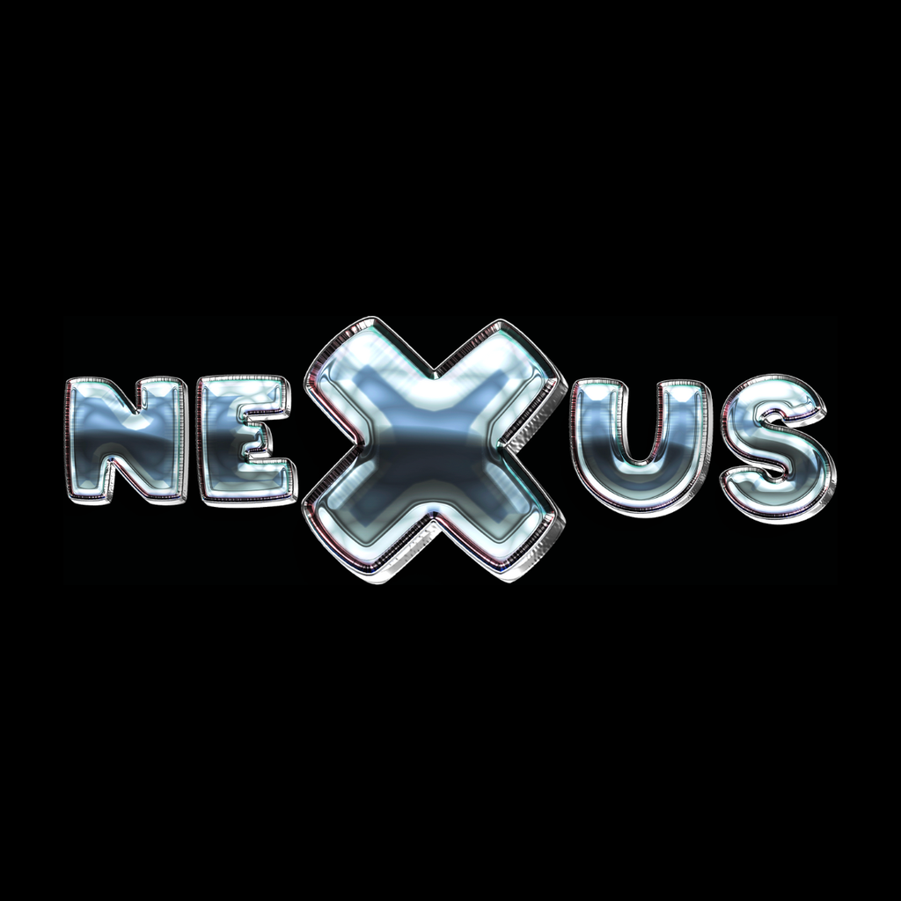

NEXUS (@nexusmediafr on TikTok) publishes little-known facts about culture, history, science, art and the internet, as quiet photo carousels.
NEXUS Studio is a private tool used only by the NEXUS team to send prepared carousels to its own TikTok account as drafts, which are then reviewed and posted manually in the TikTok app.